創刊的話
孩子每週在山海課做的事，常常只留在教室和老師的紀錄裡。這份月刊每月一期，把四門山海課這個月做了什麼、孩子說了什麼、下個月要做什麼，整理成四頁送到每個家裡。歡迎長輩補充，也歡迎糾正族語寫法。
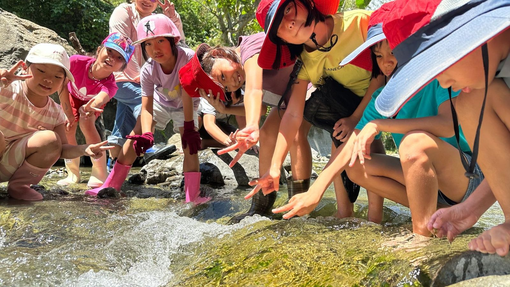
Salimpo 山海文化課程月刊給家長與部落族人的課堂報
▲低年級到寧埔溪五感踏查。蹲在淺灘上，用手摸、用眼睛找：Ira ko maan i 'alo?
低年級九月在寧埔溪邊，蹲在淺灘上互相問的一句話。
孩子每週在山海課做的事，常常只留在教室和老師的紀錄裡。這份月刊每月一期，把四門山海課這個月做了什麼、孩子說了什麼、下個月要做什麼，整理成四頁送到每個家裡。歡迎長輩補充，也歡迎糾正族語寫法。
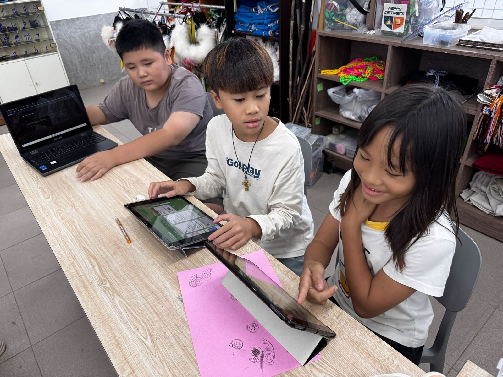
開學第一堂，孩子們看了八桑安有機稻米的紀錄片，四年級分享自己下田拔草、撿福壽螺 toko 的經驗。接著分組上網查福壽螺是什麼，再用輕黏土把它和粉紅色的卵塊捏出來。
原本很活潑的孩子，為了插得整齊變得非常安靜。
第二週用回收紙盒做部落地景。山 Lotok 在後、海 Riyar 在前，中間鋪出田 Omah，再把松針一根一根「插秧」進黏土裡。原本很活潑的孩子，為了插得整齊變得非常安靜。
九月後半進入陶土。孩子先揉土、排氣，做族語姓名章的底座，回家問家人自己的族名 ngangan 怎麼拼。第四週到校園樹下撿葉子 papah 和石頭 fokeloh，壓進陶板，切成方形，做成寧埔的花磚。月底再做陶印章和陶盤。
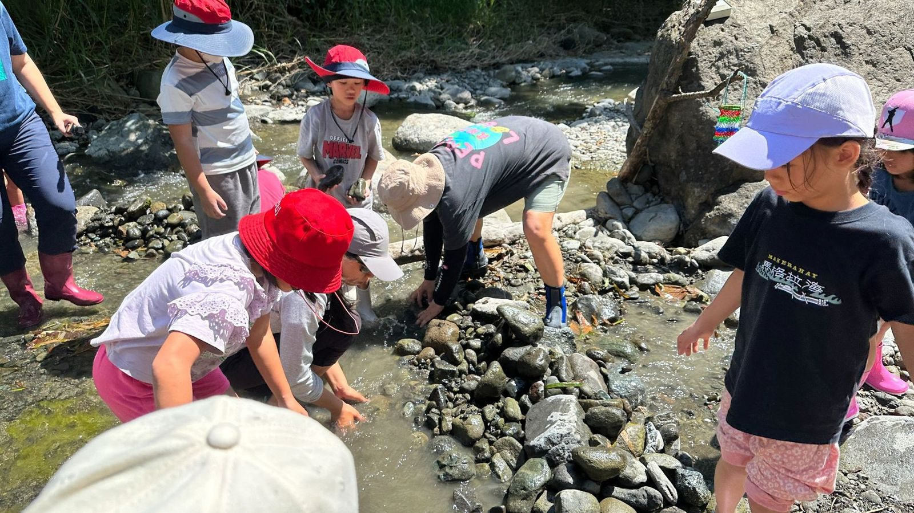
低年級前幾週在教室學溪流生物的族語，畫「我的山林朋友」。第三週走到溪流入口，安靜看老師祭告 Mifetik，才下到淺灘。第四週到寧埔溪五感踏查，分工搬石頭築小堤擋水，撈起溪蝦 afar，和部落長者一起煮刺蔥 tana' 溪蝦湯。喝湯之前，先用族語向溪流和長者道謝。
中年級從校園植物觀察開始，用手繪小書和平板辨識軟體記下葉、花、果實和族語名字。接著在校園採野菜 dateng，一起煮野菜湯，畫出校園野菜地圖。
高年級從家人的香茅 kosoy 記憶出發，練習設計訪談問題和田調的禮貌，再用眼、鼻、手分辨香茅、芒草和茅草，做成山林藥草口袋小書。
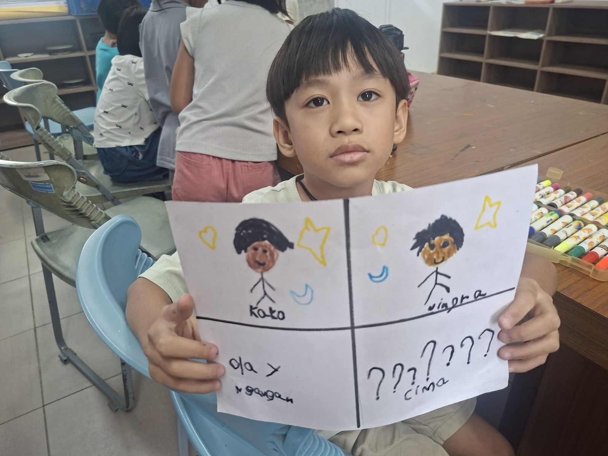
低年級用族語自我介紹，學家人的稱謂和鄰近部落的名稱。族名是誰取的、為什麼這樣取，要等長輩到校來說。
中年級看成年禮與年齡階級的影像，對照《長大的考驗》，把想問的問題貼成問題牆，之後去問部落青年。
高年級從婚禮、喪禮講到禮俗後的漁撈與聚會 Pakelang，練習氏族的句型，讀族語短文。
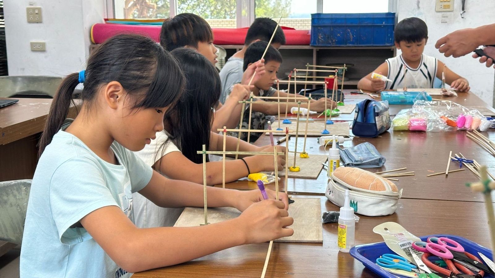
低年級在校園裡找竹、藤、茅草、木四類建材，做竹葉拓印和樹枝畫，畫傳統建築。
中年級每週做一點微型家屋 loma' 模型：基底、立柱、雙斜屋頂、門窗牆面，用細竹和棉繩綁，一邊學建屋工具和家屋部位的族語。
高年級看部落傳統建築影像，用竹筷和棉線練習綁接，學建築空間族語和六大工法名稱，一起唱《南竹湖茅草屋趣味歌》。
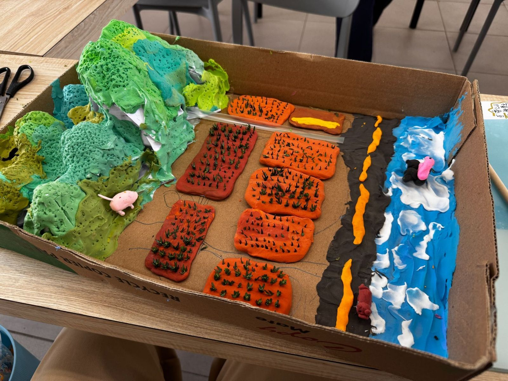
Lotok山 Omah田 Riyar海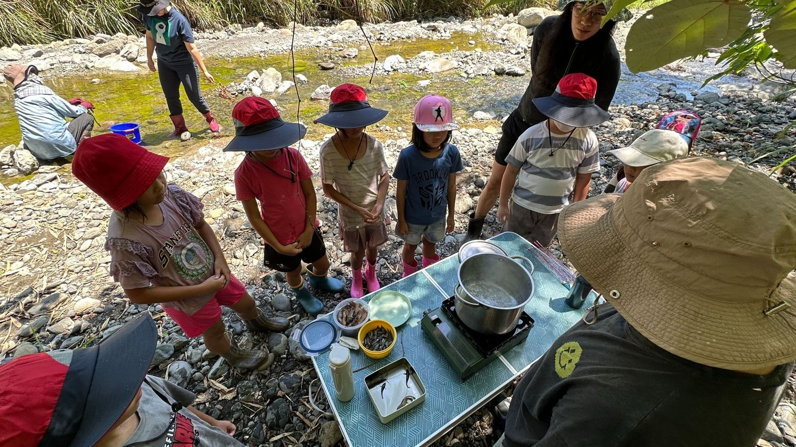
九月，部落長者到寧埔溪邊，和低年級一起煮刺蔥溪蝦湯。孩子分工搬石頭築小堤，長者在旁邊看火、下刺蔥。
山海專題的孩子這個月回家問了自己的族名。家裡的長輩如果願意，歡迎把名字的故事寫在聯絡簿或告訴導師，我們想放進下一期。
運動會前夕，部落長者到校教做紅龜粿，蒸好後孩子拿去和師長分享。接著做陶杯，開始學查書、上網找資料，每一句都記下是從哪裡來的。
進入藥草單元，認識四種阿美族常見藥草，到校園裡找一找。
用竹片做童玩，認識月桃和月桃絲的用法。
下期補上各年段的十月課堂。
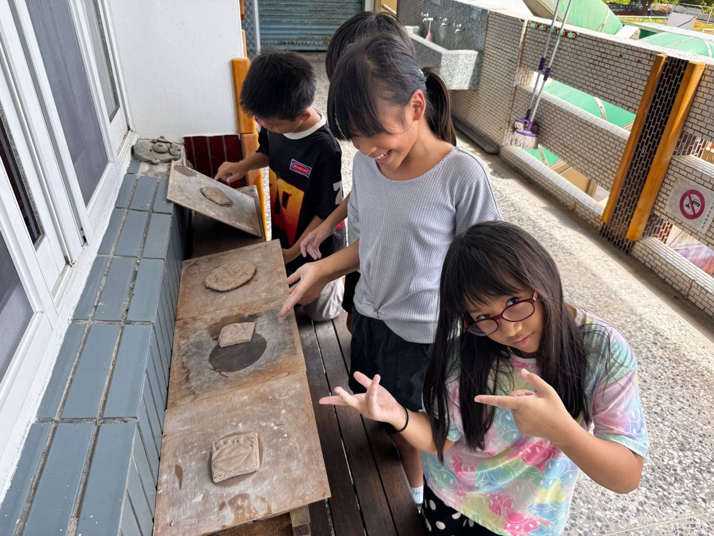
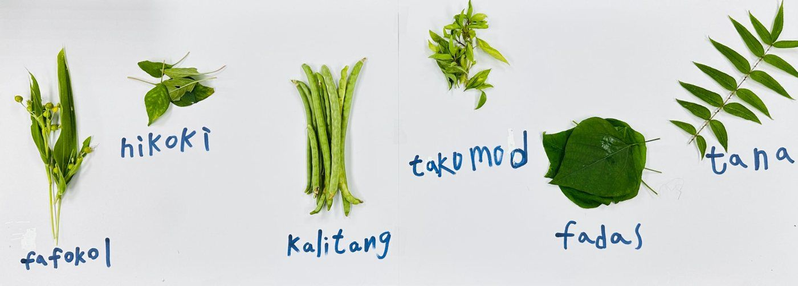
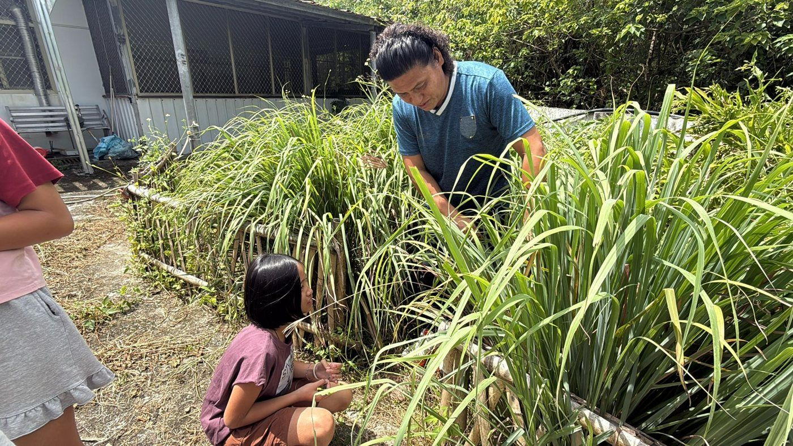
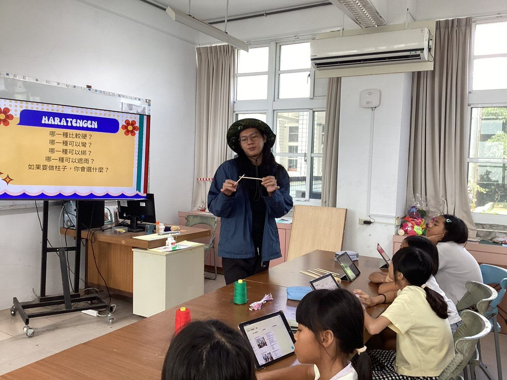
你的族名 ngangan 怎麼拼？是誰取的？這是山海專題九月的回家任務，很多孩子還沒問到。
家裡如果有紅龜粿的模子 safacoan，十月初可以借到學校，讓孩子看看自己家的花紋。
經過寧埔溪的時候，問孩子一句 Ira ko maan i 'alo? 聽他說說溪裡有什麼。
做地景模型那天，孩子一邊交換黏土一邊討論：「這裡的 Lotok 要做高一點。」族語詞就這樣混在他們的話裡。插秧那段，有幾個孩子想起家裡長輩種田的事。下次再上這一課，我想放長輩農忙時唱的古謠。